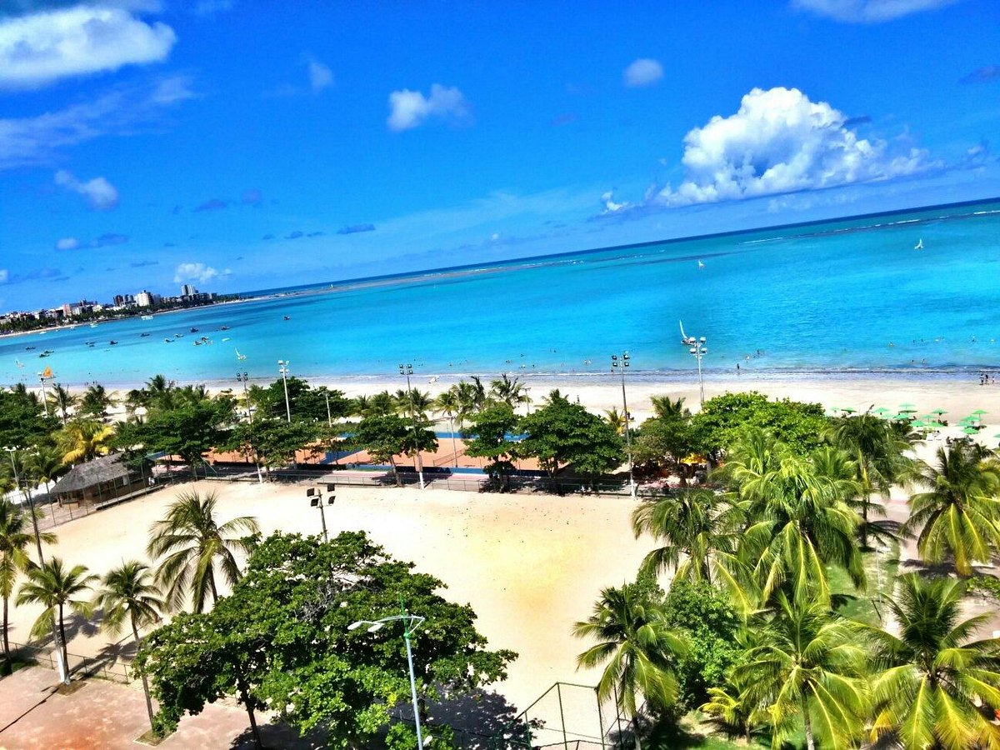
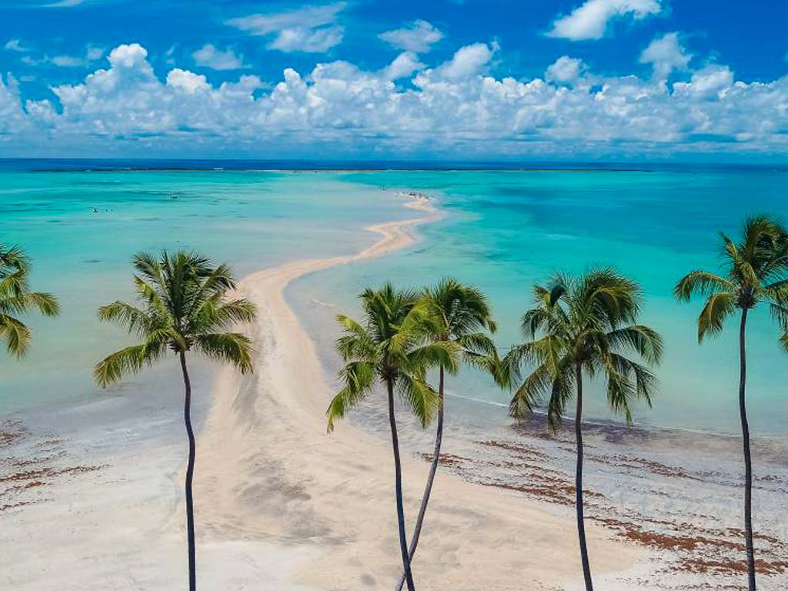

Capital de Alagoas, Maceió é um dos destinos mais procurados do Brasil. Com praias de areia branca, coqueirais e um mar de tons azul-esverdeados, a cidade encanta visitantes que buscam descanso, diversão e contato com a natureza.

Famosa por suas piscinas naturais e belas paisagens.
Uma das praias mais conhecidas e visitadas de Alagoas.

Conhecida como o Caribe Brasileiro por suas águas cristalinas.
Chegada e passeio pela orla de Ponta Verde e Pajuçara.
Visita às piscinas naturais de Pajuçara.
Passeio para a Praia do Francês e Barra de São Miguel.
Excursão para Maragogi e suas famosas galés.
Entre em contato conosco para garantir sua vaga nessa viagem inesquecível para Maceió!
📞 (85) 9 8940-9459
📧 minerioviagens@gmail.com